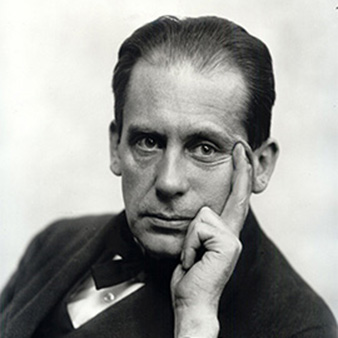
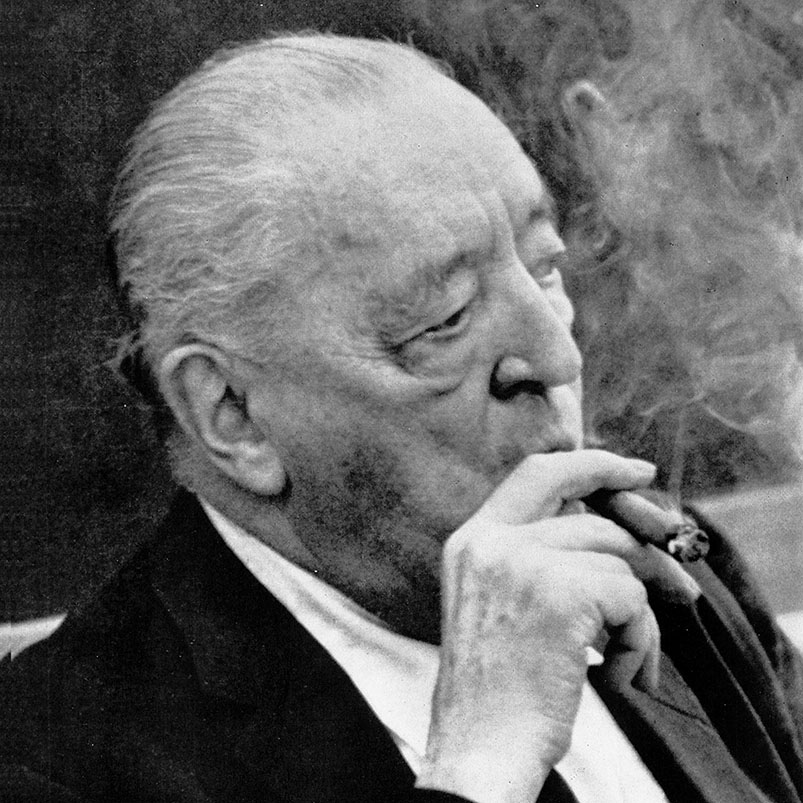
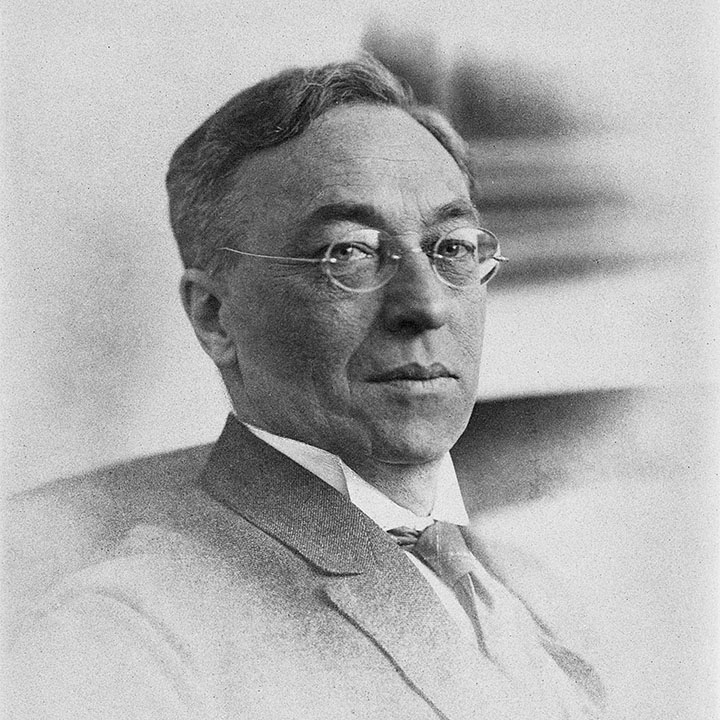
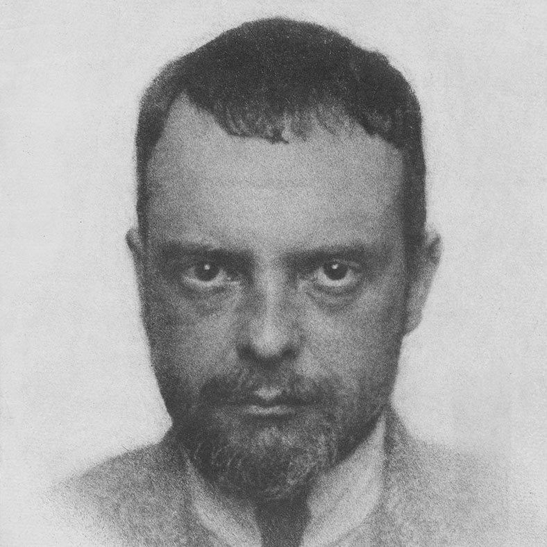
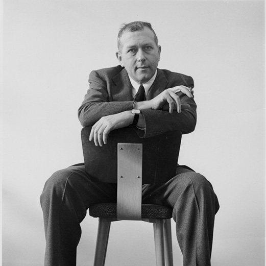
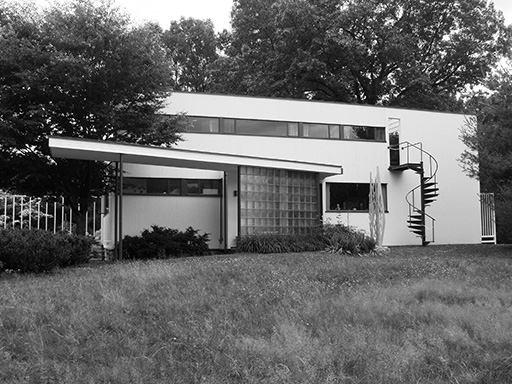
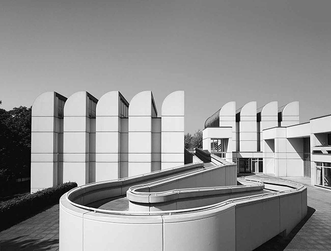
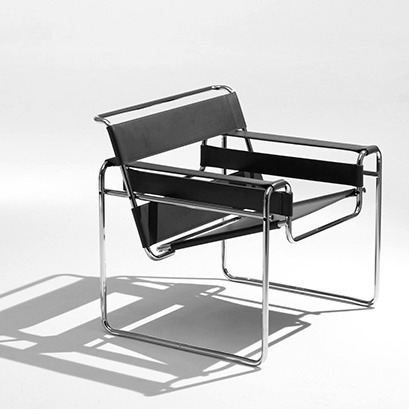
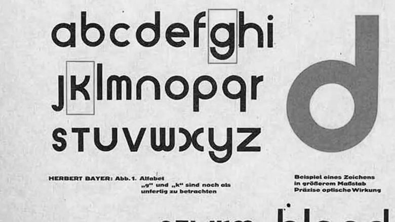
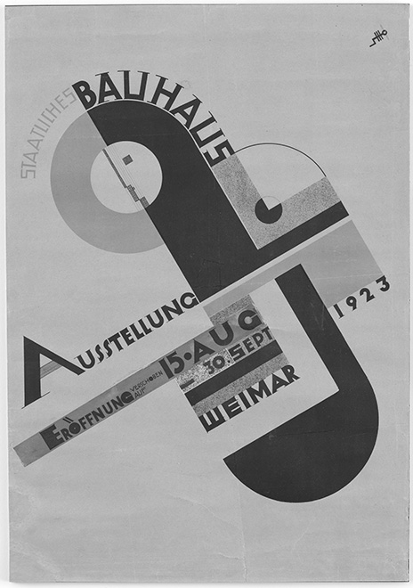

Walter Gropius founded the Bauhaus in 1919 with the goal of bringing art, craft, and architecture together. As its first director, he established the school's interdisciplinary approach to design and encouraged collaboration between creative fields.

Mies van der Rohe became the Bauhaus's third and final director in 1930. His architectural approach emphasized simplicity, open space, and the use of modern materials. He led the school during its final years in Berlin.

Kandinsky joined the Bauhaus in 1922, teaching mural painting and exploring the relationship between color, form, and composition. His theories on visual elements became an important part of the school's artistic education.

Paul Klee joined the Bauhaus faculty in 1921. Through his teaching and artwork, he explored the relationships between line, color, movement, and form, encouraging students to examine the foundations of visual expression.

Marcel Breuer studied at the Bauhaus before becoming the head of its carpentry workshop in 1925. He experimented with new materials and industrial production, becoming known for his tubular steel furniture designs..




